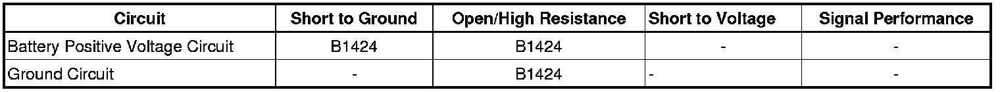

B1424
DTC B1424
Diagnostic Instructions
* Perform the Diagnostic System Check - Vehicle (Initial Inspection and Diagnostic Overview) prior to using this diagnostic procedure.
* Review Strategy Based Diagnosis (Initial Inspection and Diagnostic Overview) for an overview of the diagnostic approach.
* Diagnostic Procedure Instructions (Initial Inspection and Diagnostic Overview) provides an overview of each diagnostic category.
DTC Descriptor
DTC B1424
- Device 1 Voltage Low
Diagnostic Fault Information

Circuit/System Description
The theft deterrent module (TDM) monitors the battery positive (B+) circuit. If the voltage at the TDM is between 6 and 9 volts, and the voltage being reported by the serial data message is greater than 9 volts, DTC B1424 will set.
Conditions for Running the DTC
* The Ignition is in Accessory or RUN.
* The diagnostic runs every 100 milliseconds.
Conditions for Setting the DTC
* Voltage at the B+ circuit is between 6 and 9 volts.
* Reported battery voltage received via serial data is valid and is greater than 9 volts.
* The above conditions have been met for 2 seconds.
Action Taken When the DTC Sets
* Security Indicator turns ON.
* The driver information center displays a message (DIC) if equipped.
Conditions for Clearing the DTC
* A current DTC clears when the battery voltage at the TDM is greater than 9 volts, or if the reported voltage by serial data is less than 9 volts.
* A history DTC clears after 100 ignition cycles, if no failures are reported by the diagnostic.
Reference Information
Schematic Reference
Immobilizer Schematics (Immobilizer Schematics)
Connector End View Reference
Component Connector End Views (Connector Views)
Description and Operation
Immobilizer Description and Operation (Immobilizer Description and Operation)
Electrical Information Reference
* Circuit Testing (Component Tests and General Diagnostics)
* Connector Repairs (Component Tests and General Diagnostics)
* Testing for Intermittent Conditions and Poor Connections (Component Tests and General Diagnostics)
* Wiring Repairs (Component Tests and General Diagnostics)
Scan Tool Reference
Control Module References (Programming and Relearning) for scan tool information
Diagnostic Aids
A low voltage DTC in multiple modules indicates a concern in the charging system.
Circuit/System Verification
1. Measure the voltage at the battery terminals.Verify the battery voltage is greater 11 volts.
• If the voltage is less than the specified value, refer to Charging System Test (Charging System Test)
2. Verify that DTC B1424 is set as current.
• If DTC B1424 is as history refer to Diagnostic Aids.
3. Go to Circuit/System Testing
Circuit/System Testing
1. Ignition OFF, disconnect the harness connector at the theft deterrent module (TDM).
2. Ignition OFF, test for less than 1.0 ohm of resistance between the ground circuit terminal 3 and ground.
• If greater than the specified range, test the ground circuit for an open/high resistance.
3. Ignition ON , measure the voltage between the B+ voltage circuit terminal 1 and the ground circuit terminal 3. Verify that the voltage readings do not differ more than 2 volts than battery terminal voltage.
• If greater than the specified value, test the B+ voltage circuit for a short to ground or an open/high resistance.
4. If the circuits test normal, replace the TDM.
Repair Instructions
Perform the Diagnostic Repair Verification (Verification Tests) after completing the diagnostic procedure.
Control Module References (Programming and Relearning) for TDM replacement, set up, and programming.